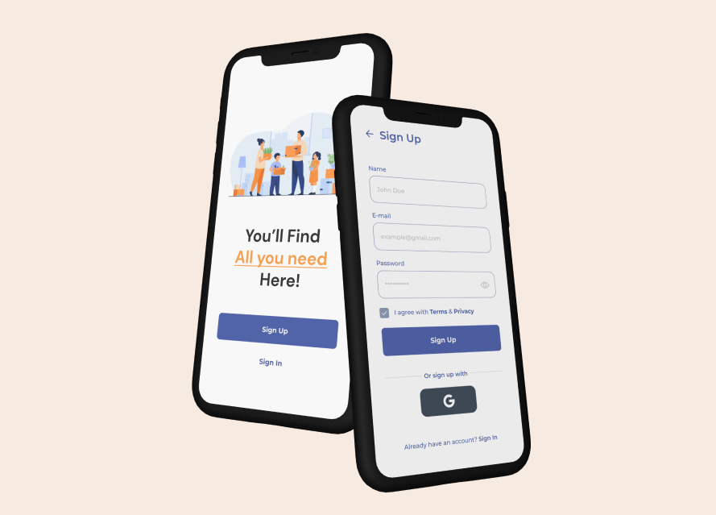

Mobiili Äppi Näidis Projekt
See projekt on mööbli ostmise platvorm, mille eesmärk on võimaldada kasutajatel mööbliloendeid sirvida ja postitada. Rakendus loodi Reacti, Javascripti, Appwrite'i ja Expo Go abil. Rakendus võimaldab kasutajatel registreeruda, sisse logida, uurida kirjeid, otsida esemeid, salvestada lemmikute hulka ja laadida üles oma mööblipilte, et neid inimestele jagada.
Saate vaadata selle projekti figma prototüüpi SIIT
Leidke projekt minu Githubist:

